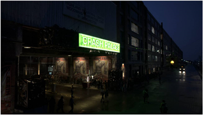
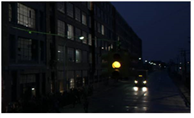
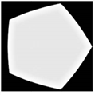
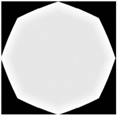
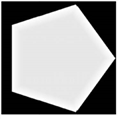
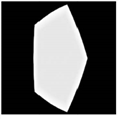
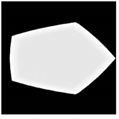
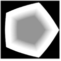

绿色标志。
远处的汽车。
ZDefocus 节点根据深度贴图通道模糊图像。这允许您模拟景深 (DOF) 模糊。
|
 |
| 原始图像。 |
|
|
|
使用 ZDefocus 模拟更窄的景深。
在这种情况下，绿色标志下的区域仍然是焦点, 而它前面和后面的区域是模糊的。 图像中的任何离焦高光都会在形状中绽放 过滤器图像，创建散景效果。 |
为了分散图像的焦点，ZDefocus 将图像分割成一层，每一层都被赋予相同的深度值，并以单个模糊大小进行处理。ZDefocus 处理完所有层后，它将它们从图像的后面到前面混合在一起，每个新层都在前面的层之上。这允许它保持图像中对象的顺序。
以下是工作流的快速概述:
| 1。 | 创建 ZDefocus 节点并将其连接到脚本。 |
请参阅 连接 ZDefocus .
| 2. | 调整模糊设置。 |
请参阅 调整模糊设置 .
| 3. | 调整任何焦点突出的形状。 |
请参阅 调整焦点外高光的形状 .
| 4. | 如有必要，增强高光以使镜头形状效果更加可见。 |
请参阅 增强焦点外的亮点 .
| 5. | 如有必要，掩盖模糊效果。 |
请参阅 掩盖模糊效果 .
提示:
You can check
使用 GPU (如果可用)
to have the node run on the graphics processing unit (GPU) rather than the central processing unit (CPU). The output between the GPU and CPU is identical on NVIDIA GPUs, but using the GPU can significantly improve processing performance.
Nuke
supports AMD GPUs on late 2013 Mac Pro 6,1 and mid 2015 Mac Pro 11,5, running OS X 10.9.3 'Mavericks', or later. While, in some cases the bit-wise equality between GPU and CPU holds, for some operations there are limitations to the accuracy possible with this configuration.
For more information on the minimum requirements, please see
GPU 加速要求
or refer to the
Nuke
Release Notes available in
帮助
>
发行说明
.
You can select the GPU to use in the Preferences. Press
转变
+
S
to open the
偏好
dialog, make sure you’re viewing the
偏好
>
性能
>
硬件
tab, and set
默认闪烁设备
to the device you want to use. You must restart
Nuke
for the change to take effect.
If you are using a render license of Nuke, you need to add
-- Gpu
on the command line.
要连接 ZDefocus:
| 1。 | 通过单击创建 ZDefocus 节点 过滤器 > ZDefocus . |
| 2. | 连接 ZDefocus 节点的 图像 输入到要模糊的图像。 |
请注意，此图像还需要包含深度贴图通道。如果您的深度通道和 rgba 通道存在于两个不同的文件中，您可以使用 ShuffleCopy 节点来组合它们。
| 3. | 使用 通道 下拉菜单选择要模糊的频道。 |
| 4. | 设置 深度通道 到通道中的 图像 包含深度贴图的输入。默认情况下，深度信息取自 Depth.Z . |
请注意，深度图不应抗锯齿。如果是这样，可以为两个对象之间沿边缘的像素指定一个位于前对象和后对象深度之间的深度。这看起来是错误的，因为它表明这些边缘像素在对象之间的某个地方浮动。
| 5. | 如果你想使用你自己的过滤器图像 (而不是预定义的 光盘 或 Bladed 图像)，将其连接到 ZDefocus 节点的 过滤器 输入和设置 过滤器类型 到 图像 在节点的属性中。 |
滤镜图像代表用于拍摄输入镜头的相机光圈的形状和大小。当剪辑在 图像 输入是模糊的，剪辑中的任何高光都绽放在形状上 过滤器 图像，创建一个散景效果。
注意:
从 pre-Nuke 8.0v7 加载脚本使
传统调整大小模式
复选框自动，向后兼容，并使用
过滤边界
下拉菜单确定过滤中使用的图像的大小。
添加新的 ZDefocus 节点将隐藏
传统调整大小模式
复选框，并允许您使用
图像过滤器
下拉菜单，让您在计算模糊时更加灵活。
请参阅
使用自定义过滤器图像
欲了解更多信息。
您可以使用 Roto 节点 ( 绘制 > Roto ) 或 Flare 节点 ( 绘制 > 耀斑 ,例如。
请注意，您不一定需要将滤镜图像裁剪到更小的尺寸，因为快速傅里叶变换用于加快大型滤镜图像的卷积。
| 6. | 将查看器附加到 ZDefocus 节点。 |
|
|
| ZDefocus 脚本。 |
| 7. | 继续到 调整焦点外高光的形状 下面。 |
要调整模糊设置:
| 1。 | 使用 数学 指定要如何使用 深度 通道 计算相机和物体之间的距离。例如，一些程序使用更高的值来表示更远的距离，而在其他程序中，它们意味着更接近相机: |
• 直接 -中的 Z 值 深度通道 直接控制模糊。例如，如果 Z 是 0.5，那么模糊大小是值的 0.5 倍 尺寸 控制 (除非这比 最大 ,在这种情况下，它被夹住 最大 )。
• 深度 -中的 Z 值 深度通道 是相机和图像中那个像素的距离。
• Far = 0 -中的 Z 值 深度通道 等于 1/距离。预计这些值将从接近相机的大正值下降到无穷远处的零。这与 Nuke 和 RenderMan 生成的深度图兼容。
• Far = 1 -近平面 = 0，远平面 = 1。这与 OpenGL 生成的深度图兼容。
• -直接 -就像 直接 模式中，Z 值 深度通道 直接控制模糊。也就是说，每一层都是模糊的，相同的 直接 模式。然而，在这种模式下，层被解释为相反的顺序，所以更高的深度值将层放在另一个层的前面而不是后面。
• -深度 -中的 Z 值 深度通道 相机前面的距离。这是一样的 深度 ,但距离是负的开始。
• Far =-0 -中的 Z 值 深度通道 等于-1/距离。这与 Maya 生成的深度贴图兼容。
• Far =-1 -近平面 = 0，远平面 =-1。
| 2. | 在查看器中，拖动 焦点 小部件位于您希望完全聚焦的区域顶部。 |
这将自动更新 焦点 ZDefocus 属性中的坐标并设置 聚焦平面 控制这些坐标处的 Z 深度值。任何具有此 Z 的层 深度值留在焦点中。您还可以在聚焦平面周围设置深度切片 (如步骤 4 中所述)，但图像的任何其他区域都将根据深度贴图模糊。
|
|
| 绿色标志下的焦点小部件。 |
| 远处汽车附近的焦点部件。 |
提示:
的
填充前景
默认情况下启用的控件试图通过填充前景中显示的区域来补偿丢失的信息，这些区域在前景失去焦点时显示。然而，由于这些地区没有真实的图像信息,
填充前景
有时可以通过添加不存在的东西来引入不受欢迎的文物。
如果在前景中看到模糊的人工制品，而不是尖锐的边缘人工制品，请尝试禁用此控件。
为了更好地查看更改的效果，您也可以设置 输出 到 焦平面设置 。ZDefocus 现在显示的景深 (DOF) 信息, Rgb 通道:
• 红色 -小于 DOF (在焦点区域的前面)。
• 绿色 -DOF 内部 (焦点)。请注意，如果 景深 设置为 0 ,没有显示为绿色。
• 蓝色 -大于 DOF (在焦点区域后面)。
当 显示图像 如果启用，此信息将覆盖在输入图像上。
|
|
|
|
焦点小部件下
绿色标志。 |
附近的焦点部件
远处的汽车。 |
| 3. | 为了扩大完全集中的领域，增加 景深 。这将在焦点平面周围设置一个完全聚焦的深度切片 (并且无论何时都以绿色显示) 输出 设置为 焦平面设置 )。真实的理论景深会将其设置为零。 |
|
|
|
| 景深 设置为 0。 | 景深 设置为 1。 |
| 4. | 要对聚焦区域应用少量模糊，请确保 里面模糊 已启用。这使得焦点区域和焦点区域之间的过渡更加平滑。 |
| 5. | 设置 输出 回到 结果 并通过设置调整无限深度的模糊量 尺寸 价值。请注意，靠近相机的模糊量比聚焦平面可能更大。 |
如果你已经设置 数学 到 直接 ,大小乘以深度，以给出该深度的模糊大小。设置 尺寸 To 1 允许您直接将深度贴图中的值用作模糊大小。
| 6. | 如果你增加了 尺寸 值在步骤 5 中，这是一个好主意，也增加 最大 价值。无论对象与相机的关系在哪里，都不会产生大于此值的模糊。 |
为了获得最大处理速度，您可能希望将此值保持尽可能低。
| 7. | 默认情况下, 自动层间距 启用时，这意味着 ZDefocus 自动算下来多少深浅层使用，基于模糊的最大尺寸 ( 最大 )。在这种模式下，这些层靠近焦平面，在焦平面上，模糊量的微小变化更明显, 而且距离越来越远 (这相当于设置 层曲线 手动控制图层时的值为 1; 请参见步骤 8)。 |
要可视化层，可以设置 输出 到 层设置 。这就像 焦平面设置 ,但在深度划分为层后显示景深 (DOF) 信息。
|
|
| 输出 设置为 层设置 . |
使用的最大模糊大小介于 0 和 最大 是 256这意味着你可以在焦平面后面有 256 层，在焦平面前面也有 256 层。
| 8。 | 如果你取消选中 自动层 间距，您可以使用手动控制层数 深度层 。请注意，使用的层越多，处理模糊所需的时间就越长。 |
|
|
|
| 深度层 设置为 10。 | 深度层 设置为 50。 |
如果有必要，你也可以增加 层曲线 集中焦平面周围的层。默认值 0 产生均匀间隔的层。
|
|
|
|
层曲线
设置为 0。
这产生均匀间隔 层。 |
增加
层曲线
值集中了层 围绕焦平面。 |
| 9. | 继续到 调整焦点外高光的形状 . |
当剪辑在 图像 输入是模糊的，剪辑中的任何焦点突出 (散景) 都假设 过滤器 图像 (的 过滤器类型 已选定)。
|
 |
|
| 原始图像。 |
焦点不足的亮点
(散景) 的形状 的 过滤器 图像。 |
如何创建过滤器图像取决于您。您可以:
• 使用预定义的光盘形状作为过滤器图像。请参阅 使用预定义的光盘图像 .
• 使用预定义的 bladed 图像 (多边形) 作为过滤图像。请参阅 使用预定义的刀片图像 .
• 在中使用自己的自定义图像 过滤器 作为过滤器图像输入。请参阅 使用自定义过滤器图像 .
| 1。 | 要查看更改的效果，请设置 输出 在 ZDefocus 控件中 过滤器形状设置 . |
| 2. | 设置 过滤器类型 到 光盘 . |
| 3. | 使用 过滤器形状 控制在 0 处的高斯和 1 处的圆盘之间溶解过滤器形状。 |
|
|
|
|
过滤器形状
设置
到 0 (高斯)。 |
过滤器形状
设置
至 1 (光盘)。这是 默认值。 |
| 4. | 使用 纵横比 控件设置过滤器纵横比，默认为 1:1。小于 1 的值在 x轴上挤压过滤器，大于 1 的值在 y轴上挤压过滤器 . |
这允许你模拟猫眼效果，这是由一些镜头设计中固有的晕角造成的。
|
|
|
|
纵横比
设置
到 0.5。 |
纵横比
设置
到 1.5。 |
| 5. | 继续到 增强焦点外的亮点 . |
| 1. | To see the effect of your changes, set output in the ZDefocus controls to filter shape setup . |
| 2. | 设置 过滤器类型 到 Bladed . |
| 3. | 使用 刀片 控制以设置构成相机光圈的光圈叶片的数量。值 3 产生一个三角形，4 个正方形，5 个五边形，6 个六边形，依此类推。 |
此字段只接受大于 1 的整数。
|
 |
 |
|
刀片
设置为 5。
这是默认的 价值。 |
刀片 设置为 8。 |
| 4. | 调整 圆度 控制过滤器多边形边的舍入。值 0 等于不舍入。 |
|
 |
|
|
圆度
设置
以 0。 |
圆度
设置
到 8。 |
| 5. | 使用 旋转 以度为单位旋转滤镜图像。正值产生逆时针旋转，反之亦然。 |
| 6. | 使用 纵横比 控件设置过滤器纵横比，默认为 1:1。小于 1 的值在 x 轴上挤压过滤器，大于 1 的值在 y 轴上挤压过滤器。 |
This allows you to simulate the cat's eye effect, caused by vignetting inherent within some lens designs.
|
 |
 |
|
纵横比
设置
以 0。 |
纵横比
设置
到 2。 |
| 7. | 要调整离焦高光内部的光线分布，请执行以下操作: |
• 调整 内部尺寸 以外部多边形的百分比形式控制内部多边形的大小。
|
|
|
|
内部尺寸
设置
到 0.2。 |
内部尺寸
设置
到 0.8。 |
• 使用 内在羽毛 在内部多边形周围向外或向内添加羽化。如果值大于 0.5，则羽毛效果为外向，如果值小于 0.5，则羽毛效果为内向。值 0.5 不产生羽化。
|
|
 |
|
内在羽毛
设置
到 0.2。 |
内在羽毛
设置
到 0.8。 |
• 调整内部亮度以控制内部多边形的亮度，其中 0 等于黑色，1 等于白色。
|
|
|
|
内部亮度
设置为 0.3。 |
内部亮度
设置为 0.7。 |
• 如果要模拟折反射透镜，请检查 折反射 。当使用折反射透镜时，图像的离焦区域是环形的，产生甜甜圈形的散景。你可以使用 折反射大小 调整过滤器中折反射孔的大小。
|
|
|
|
折反射大小
设置为 0.3。 |
折反射大小
设置为 0.7。 |
| 8。 | 继续到 增强焦点外的亮点 . |
| 1。 | 设置 过滤器类型 在 ZDefocus 控件中 图像 . |
这告诉 ZDefocus 使用 过滤器 输入而不是预定义的形状作为过滤器图像。
请注意, 过滤器 图像可以是彩色图像。这可能是有用的，例如，如果你想添加颜色边缘到你的焦点突出来模拟色差。
|
|
| 的 过滤器 图像。 |
| 2. | 如果你想显示 过滤器 查看器中的图像，设置 输出 到 过滤器形状设置 . |
注意:
从 pre-Nuke 9.0v2 加载脚本使
传统调整大小模式
复选框自动，向后兼容，并使用
过滤边界
下拉菜单确定过滤中使用的图像的大小。
添加新的 ZDefocus 节点将隐藏
传统调整大小模式
复选框，并允许您使用
图像过滤器
下拉菜单，让您在计算模糊时更加灵活。
| 3. | 从中选择要使用的频道 过滤器 输入，执行以下操作之一: |
• 设置 过滤通道 下拉菜单到您要使用的频道。默认情况下，此菜单设置为 Rgba.alpha .
• 从中使用相同的通道 过滤器 输入作为 图像 输入 (即，无论 通道 设置为)，检查 使用输入通道 .
| 4. | 在更新 Nuke 脚本，使用 图像过滤器 下拉菜单选择所需的过滤器。请参阅 选择过滤算法 有关可用过滤器的更多信息。 |
注意: 当使用使用锐化的过滤器时，例如 里夫曼 和 Lanczos ,你可能会看到光环效应。如有必要，请检查 钳制图像过滤器 来纠正这个问题。
在老年 Nuke 脚本与 传统调整大小模式 启用后，使用 过滤边界 下拉菜单选择是否将过滤器图像限制为:
• 形状 -The 过滤器 输入的边界框。在这种情况下，ZDefocus 只使用边界框区域，过滤器的中心是边界框的中心。这是默认值。你可能想使用它，例如，如果你的 过滤器 输入是一个带有小边界框的旋转形状，该边界框不会填充整个格式区域。
• 格式 -The 过滤器 输入的格式。在这种情况下，ZDefocus 使用整个格式区域，允许您在格式内偏移过滤器图像。
| 5. | Proceed to Enhancing the Out-of-Focus Highlights . |
为了增强焦点外的亮点:
| 1。 | 要使散景镜头形状效果更加温暖和可见，请检查 伽马校正 . |
这意味着在模糊之前应用 2.2 的伽马查找曲线，然后反转最终输出。
|
|
|
| 没有 伽马校正 . | 与 伽马校正 . |
| 2. | 您还可以通过启用使镜头形状效果更加可见 布鲁姆 . |
上面的任何亮点 布鲁姆门槛 值相乘, 布鲁姆增益 价值。下面的亮点 布鲁姆门槛 不受影响。
这允许你对高光的控制比 伽马校正 ; 然而, 伽马校正 可以更好地展示一些亮点。
|
|
|
| 没有 布鲁姆 . | 与 布鲁姆 . |
| 3. | 继续到 掩盖模糊效果 . |
要掩盖模糊效果:
| 1。 | 做 一 以下是: |
• 确保 ZDefocus 节点中有一个遮罩通道 图像 输入，并且没有连接到 面具 输入。
• 将蒙版连接到 面具 ZDefocus 节点的输入。如果你看不到 面具 输入，打开节点的控件并确保 面具 设置为 没有 .
如果你想从面具 面具 输入复制到预定义的 面具。 通道，也检查 注入 。这样，您可以使用 面具 再次输入下游。
| 2. | 如果你不想使用 alpha 通道，磨砂，选择您要使用的 面具 下拉菜单。 |
默认情况下，模糊仅限于此通道的非黑色区域。
| 3. | 如有必要，请检查 反转 反转蒙版，以便模糊仅限于蒙版的非白色区域。 |
| 4. | 要模糊遮罩的边缘，请选中 边缘 . |
| 5. | 要在原始图像 (0 处) 和完整 ZDefocus 效果 (1 处) 之间溶解，请调整 混合 滑块。节点图上的节点上会出现一个浅灰色的小方块，表示未使用完整效果。 |
|
|